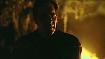
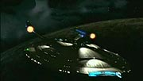
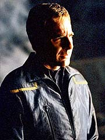
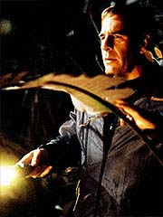
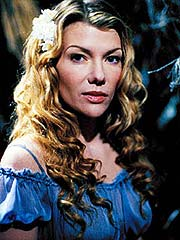
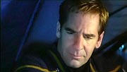
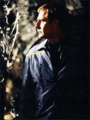

Episdio
anterior | Prximo
episdio
Sinopse:
A Enterprise encontra um planeta
errante, provavelmente desgarrado do sistema solar onde se
originou. Depois que T'Pol confirma a presena de formas de vida
em torno de fontes gasosas alimentadas por energia geotrmica na
superfcie do astro perdido, Archer fica interessado. E a
curiosidade s aumenta quando uma nave detectada no solo. O veculo
no responde aos chamados, e o capito decide enviar um grupo de
descida para investigar.
Chegando l, o grupo, composto por Archer, T'Pol, Reed, Tucker e
Sato, acaba cercado por aliengenas. Embora eles paream
agressivos a princpio, o pessoal da Enterprise consegue
esclarecer suas intenes pacficas e estabelecer contato.
Archer descobre que eles so os Eskas, uma raa de caadores.
Eles esto l para abater espcies locais, uma honra concedida
a um caador muito raramente e por um perodo muito curto,
devido necessidade de preservar o ecossistema para as futuras
investidas. J h nove geraes os Eskas visitam o planeta
para caar.

Archer agradece
pela simptica acolhida dos caadores em seu acampamento, e Reed
pede permisso para participar de uma das caadas. Ele promete
ao capito no atentar contra os animais, mas apenas observar os
Eskas, no intuito de aprender sobre suas tticas, que to
habilmente cercaram os tripulantes da Enterprise momentos antes.
Archer autoriza seu oficial de armamentos a prosseguir. Em
contrapartida, ele planeja acompanhar seus outros tripulantes em
uma expedio para observar as fontes gasosas que esto perto
dali. Mas antes que todos partam, eles descansam no acampamento,
para se preparar para as atividades intensas que viriam depois.
Hoshi decide voltar nave, e acompanhado at l por seus
colegas, exceo de Archer e Reed, no shuttlepod. O capito
comea a cochilar, quando ouve uma voz feminina chamando-o na
floresta. Ele decide procurar que o est chamando por seu
primeiro nome, o que o leva a uma mulher com num leve vestido
azul.

Quando
ele decide ir atrs, ela desaparece. Archer retorna ao
acampamento e relata o ocorrido. Mas como nenhuma forma de vida
daquele tipo havia sido detectada no planeta, fato que foi
corroborado pelos relatos dos Eskas, todos, inclusive seus
oficiais, acreditaram que se tratava de um sonho particularmente vvido
do capito. Mas Archer estava certo de que o que tinha visto era
real.
No dia seguinte, Reed acompanha a caada, cujo desfecho no
dos melhores. Um dos caadores ferido por uma estranha
criatura e est em estado grave. Archer tambm enfrenta
problemas, quando volta a avistar a mulher, sozinho, e ela diz que
precisa de sua ajuda. O capito, depois de enfrentar o ceticismo
de T'Pol e Tucker, opta por no revelar que a viu de novo.
De volta ao acampamento, os Eskas esto perturbados pelo estado
de seu colega, que provavelmente obrigar o fim prematuro da caada.
Archer se oferece para ajudar, levando o caador ferido at a
Enterprise, onde ele poder receber tratamento mdico adequado,
enquanto os outros seguem com sua tarefa no planeta. Aps alguma
relutncia, o lder Eska concorda.

No retorno
Enterprise, Phlox trata o homem ferido e encontra traos da
criatura no ferimento --estranhamente, entretanto, os resduos
que ele encontra so muito exticos, como se pertencessem a uma
criatura que podia mudar sua prpria estrutura, um transmorfo.
Depois de providenciar o tratamento do caador Eska, Archer
retorna superfcie, e volta a encontrar a mulher. Ela revela
que pertence espcie que os caadores esto procurando, e
que pode se transformar em qualquer forma que queira.
O dilogo interrompido pelos caadores, disparando contra
ela. Ela foge e Archer entra em conflito com os aliengenas. Mas
eles mantmm sua atitude e o capito fica s a matutar como
agir nessas circunstncias. Informado de que os Eskas s
conseguem encontrar os transmorfos, chamados de Wraiths, porque
eles emitem uma substncia detectvel quando esto com medo,
Archer pede que Phlox desenvolva uma substncia para camuflar as
presas.
Ele entrega a substncia mulher, que consegue com ela salvar
seus colegas dos ataques Eskas. Os caadores deixam o planeta
descontentes com o resultado de sua caada, mas sem saber que
foram sabotados pela ao de Archer e seus tripulantes.
Comentrios:
Para no perder tempo enrolando, "Rogue Planet"
seguramente o pior episdio da primeira temporada de Enterprise.
H vrios problemas com a histria toda, mas o principal deles,
e o que define a qualidade do produto final, que simplesmente no
h enredo suficiente para 45 minutos. Com o que eles tinham,
daria para 20 minutos, no mximo.

A
premissa toda no ridcula. No h problemas insolveis de
continuidade ou de contedo cientfico, embora em geral seja
preciso uma boa dose de suspenso da descrena para acreditar
que um ambiente inspito como um planeta errante poderia abrigar
uma fauna e uma flora to ricas, somente com base em energia geotrmica.
O roteiro no muito convincente nesse sentido, mas ao menos o
roteirista se preocupou em explicar como aquele
"milagre" era possvel, eliminando o problema da cabea
do telespectador.
Os que esperam alguma espcie de "Spock's Brain"
vo se decepcionar. Em compensao, vo achar que talvez
tivesse sido melhor um episdio totalmente "lobotomizado"
do que o que acabou saindo. Isso porque, se no bobo, "Rogue
Planet" chato at dizer chega. Tudo pelo fato de a
histria no ser suficiente para cobrir o tempo de tela, o que
nos obriga a ver as mesmas cenas e as mesmas dvidas e os mesmos
problemas de novo e de novo e de novo.
Quem v os primeiros 15 minutos j sabe exatamente o que vai
acontecer nos 30 seguintes --exceto por Archer e cia., o que no
ajuda nem um pouco a construir a fama de competncia que ao menos
o capito da Enterprise deveria ter. Alis, o pobre Jonathan
a maior vtima do episdio, ridicularizado at o ltimo fio de
cabelo. Por um momento, parece at que o roteirista faz de propsito.
Quer exemplos? Veja a discusso em que Reed e Archer debatem
sobre suas "carreiras" pregressas como escoteiros. O
oficial de armas no s revela ter ganho mais medalhas de honra
ao mrito que seu capito (28 contra 26), como ainda se presta a
consolar Archer, com uma frase do tipo "Vinte e seis muito
bom, senhor". Pobre Jonathan...

Mais tarde,
quando Archer tem sua primeira e segunda vises da mulher
misteriosa, ningum acredita nele. Nem mesmo seus prprios
oficiais! E os aliengenas ainda tm a cara-de-pau de zombar do
capito, sugerindo que ele tenha "bons sonhos" com a
gatinha. At T'Pol diz a Archer que ele no estaria to
preocupado com a mulher, se fosse um barbado l na floresta!
Pobre Jonathan...
Em vez de mostrar, nesse momento crtico, seu esprito de
liderana, Archer fica to intimidado pelas zombarias e pelo
descrdito que finge no ter visto nada quando a mulher faz a
segunda apario e logo depois T'Pol e Tucker chegam
"cena do crime". Pobre Jonathan...
E depois de tudo isso, ainda precisamos ouvir o capito
perguntando a Tucker se seu amigo j tinha o visto fazendo alguma
coisa realmente estpida. A frase produz risos involuntrios,
depois de tudo o que vimos Archer fazer nos primeiros episdios
da srie.

Certamente
o capito mereceria melhor caracterizao que essa. No parece
ser o mesmo capito agressivo e confiante que vimos em "Broken
Bow". Pior, parecia um pateta. Muitos fs
confundiram esse problema na caracterizao de Archer com um
problema de atuao, culpando Scott Bakula pelo mau desempenho.
Claramente, no o caso. Fosse o roteiro mais condizente com o
personagem e o papel que ele deveria desempenhar na srie,
certamente a histria do episdio seria outra.
Mesmo considerando que Archer tivesse de passar por uma
"crise de liderana" pelo descrdito que as aparies
da mulher transmitiram, seria possvel fazer deste um bom episdio,
analisando mais a fundo a personalidade do capito e mostrando
como ele poderia superar esse problema. Outra boa alternativa para
salvar o episdio seria se concentrar no aspecto puramente
"fico cientfica", explicando por que transmorfos
adoram planetas errantes (os Fundadores do Dominion tambm
moravam em um planeta errante, como visto em "The
Search, Part I"), ou ainda como toda aquela vida foi
florescer naquele mundo abandonado at por seu sol. Infelizmente
nenhuma dessas alternativas foi selecionada, e "Rogue
Planet" segue sua trilha previsvel e entediante at o
final.

Os personagens
regulares so estranhamente maltratados aqui, como nunca antes
havia sido feito na srie. Dessa forma, nem mesmo a interao
entre eles e o bom humor foram capazes de salvar o episdio, como
j havia acontecido em outras ocasies. E, bvio, quem mais
saiu perdendo nesse sentido foi Archer, apesar de ser o que tem
mais tempo de tela. Por incrvel que parea, os caadores Eskas
foram mais bem-trabalhados que os regulares! S deixou a desejar
sua maquiagem, novamente aquele estilo incuo de "aliengena
com testa da semana" que consagrou Michael Westmore por
tantos anos em A Nova Gerao, Deep Space Nine e Voyager.
Em termos tcnicos, o episdio at que se salva. Embora os cenrios
sejam repetitivos (sempre aquela floresta), pouco inventivos
(plantas mais terrestres do que nunca) e mal-iluminados (num
planeta em que sempre noite), o diretor Allan Kroeker consegue
tirar o melhor deles. E as tomadas espaciais do planeta errante e
da Enterprise na escurido, embora curtas e insignificantes em
termos de enredo, do uma plstica especial ao episdio.
Apesar dessas poucas qualidades, "Rogue Planet"
vai ficar marcado como o mais esquecvel segmento do primeiro ano
de Enterprise. Com justia.
Citaes:
Reed - "Follow
me."
("Sigam-me.")
Archer - "Why don't you let me play captain for a while,
Malcolm?"
("Por que voc no me deixa brincar de capito um pouco,
Malcolm?")
Archer - "We spot any more creatures like that and we'll
earn our exobiology badges."
("Se encontrarmos mais criaturas como essa vamos ganhar
nossas medalhas de exobiologia.")
Reed - "Actually... I already have that one."
("Na verdade... eu j tenho essa.")
Trivia:
 John Billingsley foi um dos que comentou o episdio.
"Aterrissamos num planeta em que um grupo de caadores
parece estar caando as bestas nativas", diz. "Mas
acaba que as bestas nativas no so bestas, mas transmorfos
peculiarmente evoludos, que tentam comunicar ao capito a urgncia
de seu pedido para acabar a matana."
John Billingsley foi um dos que comentou o episdio.
"Aterrissamos num planeta em que um grupo de caadores
parece estar caando as bestas nativas", diz. "Mas
acaba que as bestas nativas no so bestas, mas transmorfos
peculiarmente evoludos, que tentam comunicar ao capito a urgncia
de seu pedido para acabar a matana."
Nas primeiras verses do roteiro, o principal alvo dos caadores
Eskas no eram os Wraiths, mas os Dalakian Elks.
A atriz Stephanie Niznik j apareceu em Jornada antes, como a
oficial Trill Kell Perim, de "Insurreio". J
Conor O'Farrell havia participado de "Little Green Men",
de Deep Space Nine, como o professor Jeff Carlson. Eric
Pierpoint interpretou o embaixador Voval, em "Liaisons",
de A Nova Gerao, o capito Sanders em "For the
Uniform", de Deep Space Nine, e Kortar em "Barge
of the Dead", de Voyager. Finalmente, Keith
Szarabajka j havia vivido o vedek Teero Anaydis, em "Repression",
de Voyager.
Andre Bormanis, consultor cientfico de Jornada e
incorporado aos roteiristas de Enterprise durante a
primeira temporada, rebateu as crticas sobre o uso supostamente
pouco cientfico do planeta errante (rogue planet) neste episdio.
"O planeta estava em uma base cientfica bem firme. H
planetas errantes em nossa galxia. Atividade geolgica tem
pouco ou nada a ver com foras de mar [que exigiriam a presena
de outros corpos macios, como um sol ou luas]; conduzida pelo
calor interno do planeta, que vem principalmente do decaimento
radioativo do ncleo do planeta, e, em menor quantidade, da
energia de acreo residual (energia de formao). Sobre as
folhas das plantas, eles poderiam ser grandes para recolher os ftons
da luz estelar (se voc j esteve em algum lugar completamente
isolado da luz artificial, voc sabe quanta luz pode ser vista
das estrelas e da Via Lctea), ou as folhas podem no ter nada a
ver com fotossntese. As folhas tambm so importantes para a
respirao em plantas. Uma das coisas que eu esperava que o episdio
poderia fazer era estimular a discusso entre fs da srie
interessados em cincia sobre se um ambiente classe-M poderia ou
no ser sustentado em um planeta errante. uma questo muito
interessante, sem nenhuma resposta pronta disponvel."
Ficha
tcnica:
Histria de Rick Berman
& Brannon Braga & Chris Black
Roteiro de Chris Black
Direo de Allan Kroeker
Exibido em 20/03/2002
Produo: 018